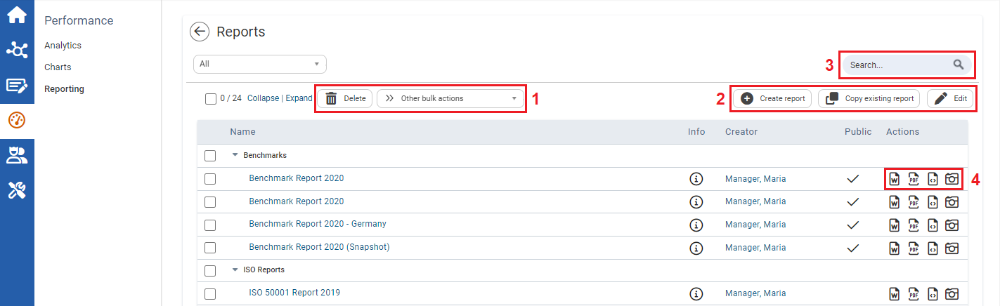
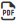
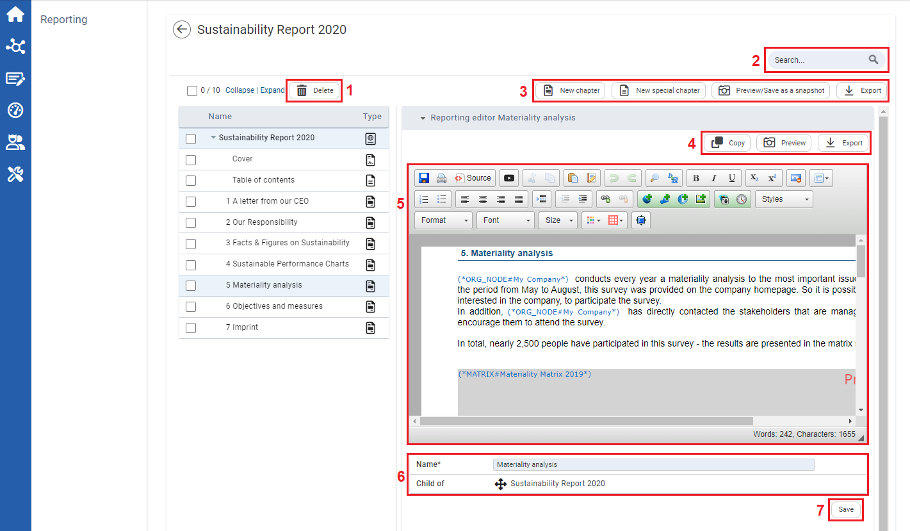

With the Reporting module you can create reports based on your performance indicators, e.g. to create a sustainability report, within the framework of an audit/certification, to attain a standard or for presentations for stakeholders.
The table displays the report name, info, creator, and the visibility. To open the report, click on the name.

1
Select the checkboxes, then click to delete multiple entries at once, or select one of the bulk actions: to move the selected entries into a folder,

to create PDFs, or to create Word documents.
2
Click to create a new report. You can select an empty report which you can fill in with information such as name, description etc.and add chapters later on.You can also choose a customized report form which you set up within the following steps:
Preselect the indicators based on entered data (e.g. with data, by workflow step etc.)
Select the time periods
Select the organizational units
Select the KPIs
Enter name and description
To copy a report, click . You pass through a dialog with the following steps:
Select the desired report
Select and replace organizational unit
Select and replace time period
Enter name and description
When copying a report, the placeholders will be replaced with the new selections and available placeholder charts in the report will be recreated.
Click to edit the name and description of a report.
3
Use the Search function to browse through the displayed entries by typing any term into the search field. You can use the drop-down menu to filter per specific criteria and collapse and expand all entries.
4
Click an icon to perform an action on an individual report: click to download the report as a Word file, click to download it as a PDF, or click to download it in HTML format. You can also click to view a preview of the report or to save the report as a snapshot(freezing the current report on state by converting all placeholders to their actual values).
Creating a Report
Each report is divided into chapters. Click on a chapter name to display it on the right side. After creating a new report, click on a chapter to edit the report. You can create text areas and use the created KPIs and charts in the chapters.

1
Select the checkboxes and click to delete chapters.
2
Use the Search function to search for the displayed chapters. You can also Collapse and Expand all entries.
3
To create a new chapter, click New chapter, or click New special chapter tocreate a cover and table of contents. Click to view a preview of the report or to save the report as a snapshot (freezing the current report on state by converting all placeholders to their actual values). Click to export the files to Word, PDF and/or HTML.
4
Click to copy the chapter. Here you can also preview the chapter or download the chapter as a Word, PDF or HTML file by selecting the desired format.
5
This section provides formatting options to edit the chapter, as well as a preview and history. In addition, you can insertimages, charts and placeholders. These will be replaced in preview and export by actual values stored in the system.
 to delete multiple entries at once, or select one of the bulk actions: to move the selected entries into a folder,
to delete multiple entries at once, or select one of the bulk actions: to move the selected entries into a folder,  to create a new report. You can select an empty report which you can fill in with information such as name, description etc. and add chapters later on. You can also choose a customized report form which you set up within the following steps:
to create a new report. You can select an empty report which you can fill in with information such as name, description etc. and add chapters later on. You can also choose a customized report form which you set up within the following steps:  . You pass through a dialog with the following steps:
. You pass through a dialog with the following steps: to edit the name and description of a report.
to edit the name and description of a report. to download the report as a Word file, click
to download the report as a Word file, click  to download it as a PDF, or click to download it in HTML format. You can also click to view a preview of the report or to save the report as a snapshot (freezing the current report on state by converting all placeholders to their actual values).
to download it as a PDF, or click to download it in HTML format. You can also click to view a preview of the report or to save the report as a snapshot (freezing the current report on state by converting all placeholders to their actual values). to delete
to delete  to view a preview of the report or to save the report as a snapshot (freezing the current report on state by converting all placeholders to their actual values). Click to export the files to Word, PDF and/or HTML.
to view a preview of the report or to save the report as a snapshot (freezing the current report on state by converting all placeholders to their actual values). Click to export the files to Word, PDF and/or HTML. to copy the
to copy the